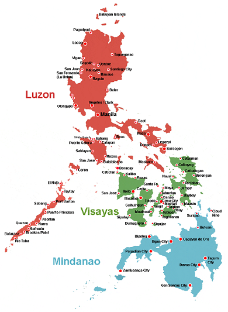
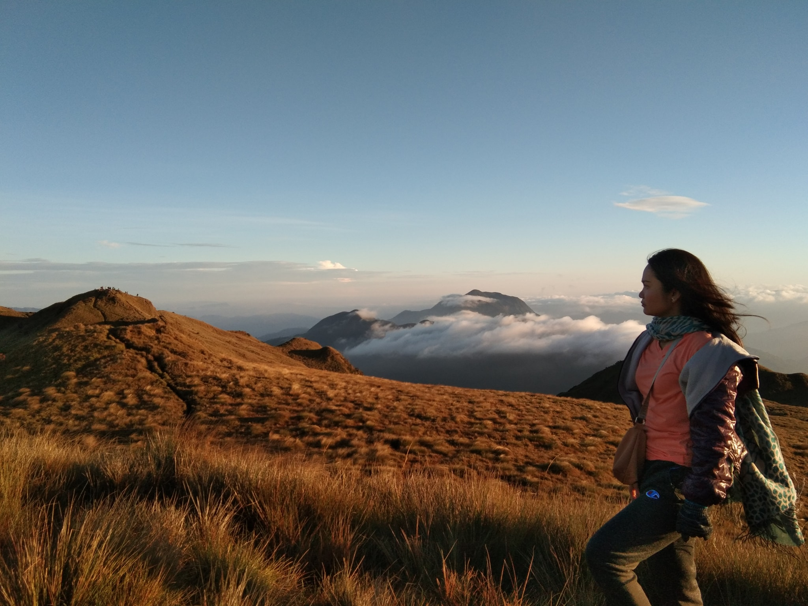
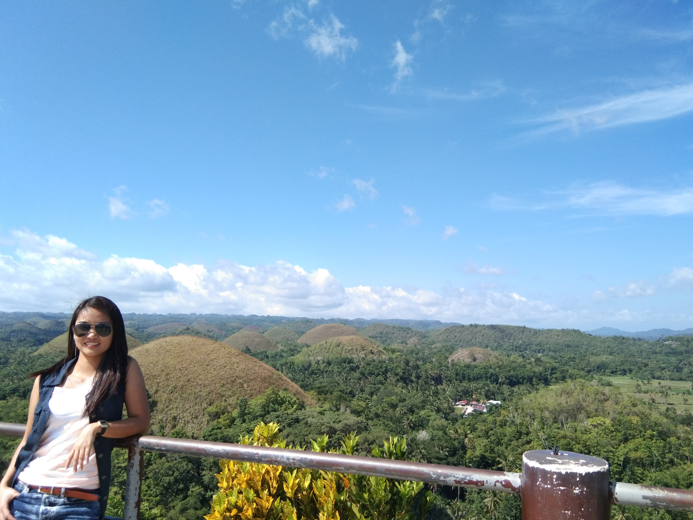

Travel. My home country is an archipelago, it is blessed with islands, each offering beautiful destinations, from white sand beaches to refreshing cascades. In my job, they usually require us to visit the client on-site specially during project deployement so we get the chance to explore the nearby tourist spots. Hover on the Philippine map and click the main islands (LUZON, VISAYAS, MINDANAO) to see my favorite destination.
The Philippines

Click the play button below to hear the national anthem of the Philippines
Luzon sits at the northern end of the Philippines, and is the country’s largest and most populous island. It’s known for its mountains, beaches and coral reefs, and is home to Manila, the national capital. Set on a deep bay with famed sunsets, the city has many Spanish-colonial landmarks, national memorials and monuments, a centuries-old Chinatown and a diversity of museums.
Visayas The Visayas is blessed with numerous scenic and must-visit places. From forestry to beaches, waterfalls, and all other lands of bodies of water you can think of, Visayas has it.
It is no doubt that it has been making a name in the industry of tourism – both from the local and international arena. In this write-up, I will be sharing with you a slice of what the Visayas has to offer in terms of tourist spots that you consider visiting in the future.
Mindanao encompasses the large island of Mindanao plus smaller islands in the southern Philippines. In its largest city, Davao, the Philippine Eagle Centre and Davao Crocodile Park showcase local wildlife. The urban People's Park features statues of indigenous people and the Durian Dome, named after the spiky, smelly fruit that grows in abundance on Mindanao. Southwest, the Mount Apo volcano has trails and a lake.
Mt. Pulag

Mt Pulag is the highest mountain in Luzon and one of the most beautiful mountains in the Philippines. It has an elevation of 2922 meters above sea level or 9586 feet. It is a favorite hiking destination among beginners and experienced hikers. Also, it has one of the richest biodiversity in the country, having wide trails surrounded by pine trees, mossy forests, and grassland landscapes.
This magnificent creation is located in Benguet and it borders the provinces of Ifugao, and Nueva Vizcaya. The mountain contains more than five hundred plant species. It also houses several endangered species of mammals. The native tribes say that Mt. Pulag is the playground of the gods. In the same way, it is literally the closest to heaven that hikers can get.
Moreover, Mt. Pulag is famous for its sea of clouds and the magnificent view of the Milky Way Galaxy on a clear night, which has attracted many local and foreign tourists who wish to experience and see this kind of scenery. Mt. Pulag has four different trails namely Ambangeg Trail, Akiki Trail, Tawangan Trail and Ambaguio Trail. Ambangeg Trail is the easiest and the most popular among the hikers while Ambaguio Trail is the longest and the hardest trail.
I reached the summit of Mt. Pulag on May 5, 2019, with two of my closest friends, before my 25th birthday. It is one of my bucketlists and being able to witness the sea of clouds before my eyes was an amazing and memorable experience. I just felt grateful that time. The 5-hour hike was realy worth it.
Chocolate Hills, Bohol

Bohol, Island The island, roughly oval in shape, lies between the Camotes Sea (north) and the Bohol Sea (south). Its volcanic core is mostly covered with coralline limestone. The rivers are short, and there are few good anchorages. Settlement is mainly coastal, except for a low central plateau that encircles the town of Carmen. The spectacular “chocolate hills,” or “haycock hills,” in west-central Bohol are named for their brown appearance in the dry season and their symmetrical, conical shapes. They are limestone remnants of an earlier erosion cycle, a phenomenon known to be present in only two or three other places in the world. The area has been developed for tourists.
In August 2019, I was in Cebu (a nearby island on top of Bohol) with my workmates, we planned a two-day trip to Bohol. We stayed in a nipa-hut inspired resort and explored the the popular tourists spots, including of course the Chocolate hills, we had lunch while having a cruise at Loboc River and celebrated Kuya Rod's birthday along the beach on our last day.
Tinago Falls, Iligan City
Tinago (Hidden) Falls .While the Philippines is reputable for its pristine beaches, there’s nothing like discovering its best-kept secrets and unspoiled beauty. Tinago Falls is one of the many hidden natural treasures that the county has.
Tucked within a ravine in Iligan City in Lanao del Norte, this majestic waterfall is the main tourist attraction of the province and also serves as a water source for residents near the area. Its name—Tinago Falls in tagalog—means “hidden” that perfectly fits its location that one can only reach by descending some 500 steps.
The 240 feet high Tinago Falls will evoke oohs and aahs and so much awe from anyone who will visit it for the first time. It is surrounded by colossal rock structures dotted by thick masses of trees and natural foliage. Despite this towering scene, what lies at the bottom of the falls leaves visitors in even greater astonishment.
Its basin features a stunning blue-green pool of cold water perfect for swimming, similar to Palawan’s jaw-dropping lagoons. The water comes from the outflow of the man-made Lanao Lake flowing to the Agus River that cuts into two channels before going to Iligan Bay. One channel goes to Tinago while the other goes to the famous Maria Cristina Falls, also in Iligan City.
You would definitely love to go back on this place once you've tried the adventurous trek then be mesmerized after reaching the falls.
I came here twice, my first time was the one in the picture with the IT staffs of one of our clients in Mindanao. They were very accommodating and kind to let us experience this tourist spot.